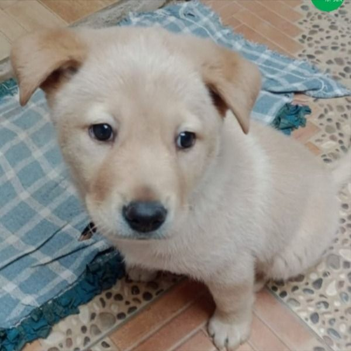
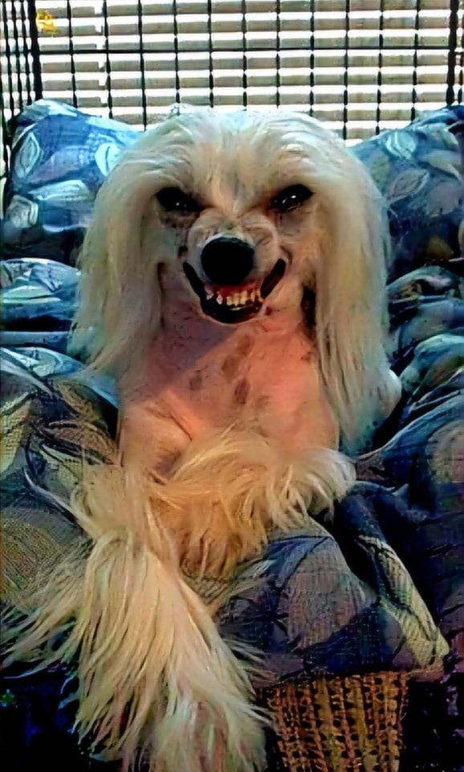
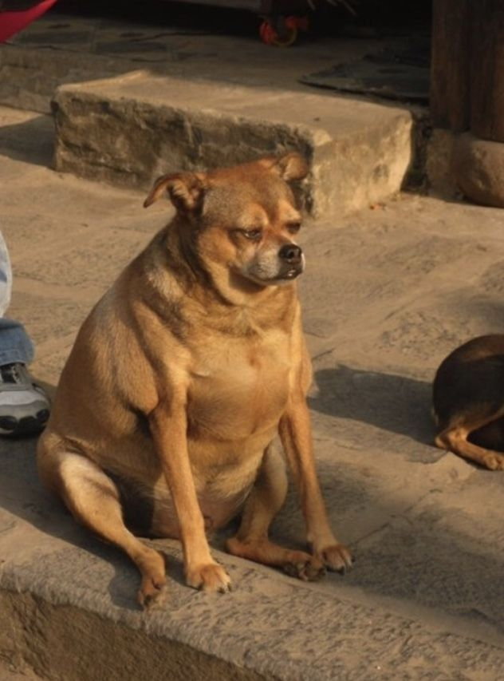
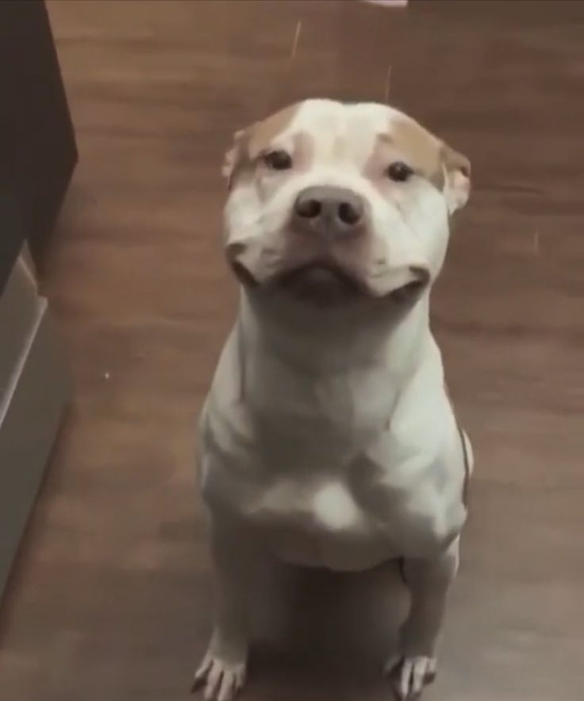
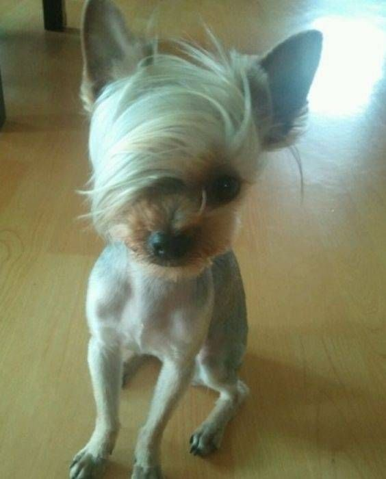
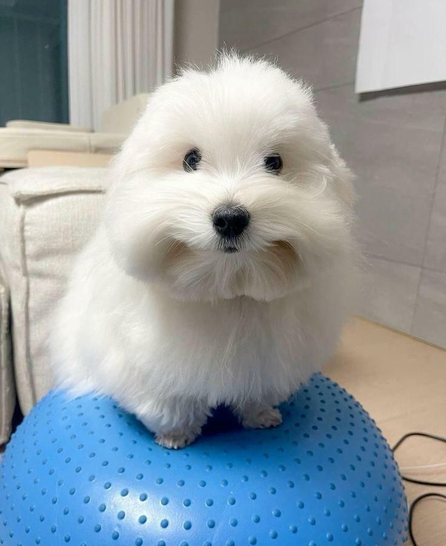
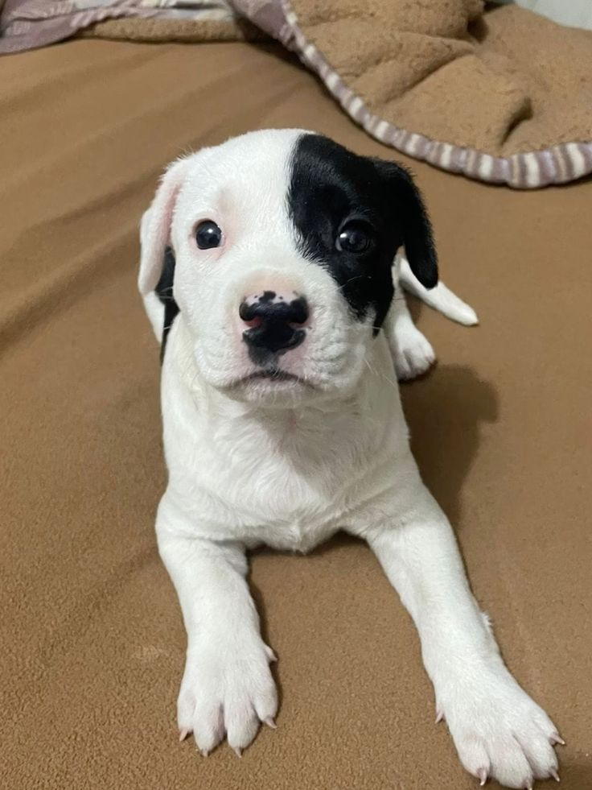
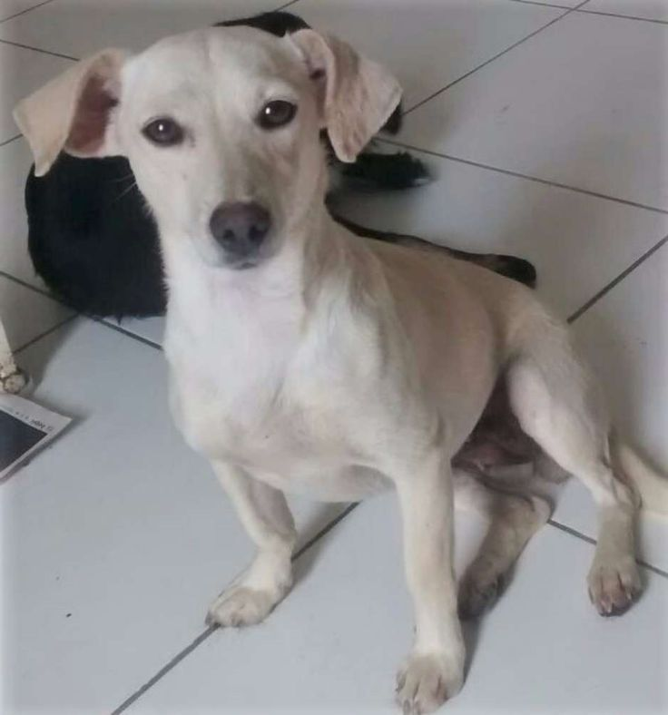
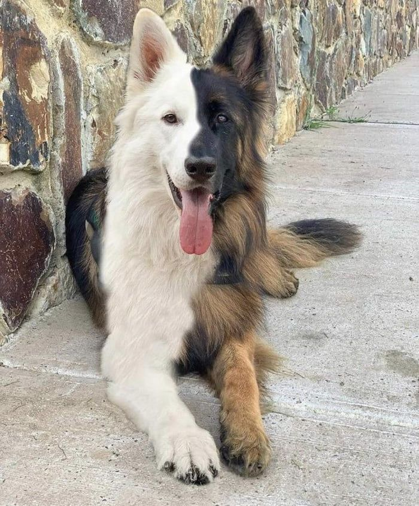

Nos Adote
-

- Thor
- Thor é um cão destemido e leal, com um coração de ouro. Ele adora brincar de buscar e tem energia para dar e vender. É o companheiro perfeito para uma família ativa que gosta de aventuras ao ar livre.
- Luna
- Luna é uma cadela elegante e gentil, com olhos que brilham como a lua. Ela é um pouco tímida no começo, mas quando se solta, mostra seu lado brincalhão e amoroso. Adora cochilos no sofá e carinhos na barriga.
- Bolinha
- Pequeno no tamanho, mas gigante na fofura! Bolinha é um cãozinho alegre e curioso que adora explorar cada canto da casa. Ele se dá bem com outros animais e crianças, tornando-se o membro ideal para uma família grande.
- Zeca
- Zeca é um cão sábio e calmo. Ele gosta de passeios tranquilos no parque e de observar o movimento do quintal. É muito paciente e ideal para quem busca um amigo leal e que não precisa de muita agitação.
- Mel
- Mel é tão doce quanto o nome dela. Ela é uma cachorra super carinhosa e adora estar perto de pessoas. Seu passatempo favorito é deitar no colo do tutor e receber cafuné. Ela é a definição de uma companheira leal.
- Simba
- Simba é o rei da selva, ou pelo menos do quintal! Este cão é majestoso e cheio de energia. Ele é muito esperto e aprende truques com facilidade. Perfeito para quem procura um cão para treinar e se divertir.
- Lola
- Lola é uma cachorrinha muito sociável e cheia de vida. Ela adora conhecer novas pessoas e outros cachorros. Sua alegria contagiante ilumina qualquer ambiente, e ela está sempre pronta para uma nova brincadeira.
- Pipoca
- Não tem como não amar a Pipoca! Ela é uma cachorrinha meiga e cheia de charme. Adora brincar com bolinhas e correr atrás de seu próprio rabo. Ela é pequena e perfeita para quem mora em apartamento.
- Fred
- Fred é um cachorro um pouco sério, mas com um coração enorme. Ele é muito protetor com sua família e adora passar o tempo em casa. Ele se dá muito bem com crianças e outros cachorros.
- Pandora
- Pandora é uma caixa de surpresas! Ela é curiosa e destemida. Ela adora passear em novos lugares e explorar. Ela é uma companheira fiel para quem gosta de atividades ao ar livre e aventuras.
ajudar

ajudar

ajudar

ajudar

ajudar

ajudar

ajudar

ajudar

ajudar

ajudar